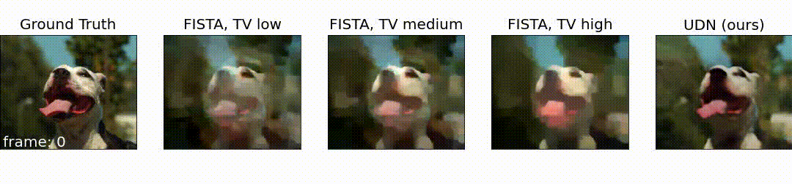
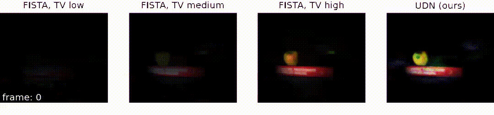
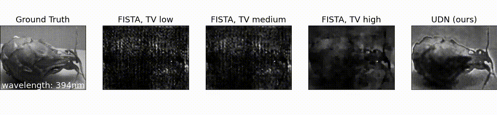
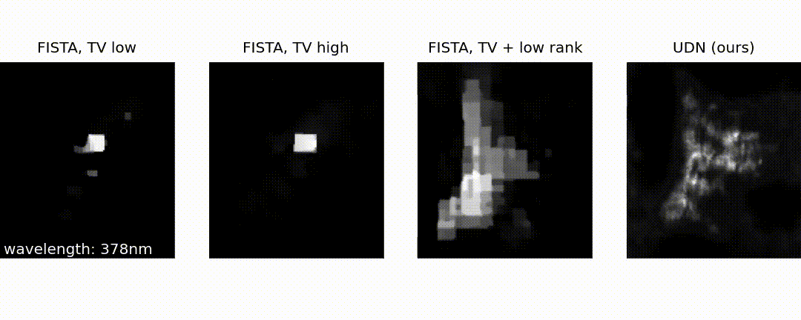

Gallery of Reconstructions
Below are some example reconstructions using our untrained network framework.
Single-shot compressive video
For single-shot compressive video, we recover a 38 or 72 frame video from a single compressive measurement.
Simulation:

Experimental:

Single-shot compressive hyperspectral imaging
For single-shot hyperspectral imaging, we recover a 3D hyperspectral datacube with 32 or 64 spectral bands.
Simlation:

Experimental:
